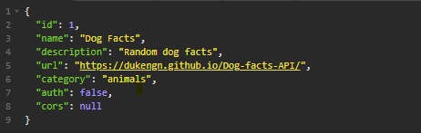

Application Programing Interfaces or API for short, are a set of functions and procedures that allow for the creation of applications that access data and features of other applications, services, or operating systems. APIs allow us to bring in data to host from a database. When you buy tickets to see your favorite band, you use an API. An API allows you sort through data in the most efficient way possible, as well as updating, adding, and deleting data. Imagine trying to display an entire database on a webpage! Then telling the user to "search" through all the information to find what they are looking for. APIs allow us to pull only the information that we requested on to the webpage.
Pictured above is an example of a JSON object.